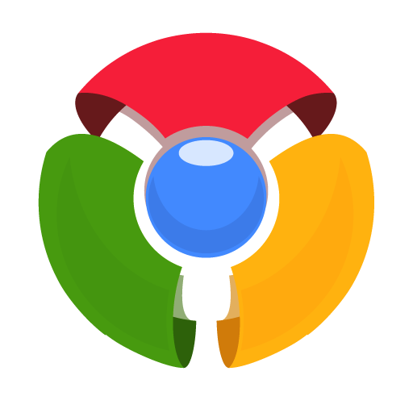

Why Google Chrome
Search instantly
Search and navigate from the same box. Choose from results and suggestions that appear as you type, including your recent searches and visited websites, so you can get to what you want in a snap. Search from the omnibox
Type less
Tired of filling out web forms with the same information time and time again? Autofill lets you complete forms with just one click. And it works across devices too — so you can skip all that small-screen typing. Start using Autofill
Pick up where you left off
Chrome brings your open tabs, bookmarks and recent searches from your computer to your phone or tablet, and vice versa. That way you have your web on all of your devices. Just sign in on your other devices to start syncing.
When you sign in to the Chrome browser, you can save and sync things like your bookmarks, history, passwords, and other settings to your Google Account, so you can get to them on any device. Only sign in to Chrome from trusted devices. To keep your data safe, we recommend you don't sign in if you're on a public computer.
Make Chrome yours
Browse just the way you'd like with Chrome themes, apps and extentions. Get straight to your favorite web destinations with bookmarks and start pages. Once you've set up Chrome, your customizations will be kept in sync across all of your devices.